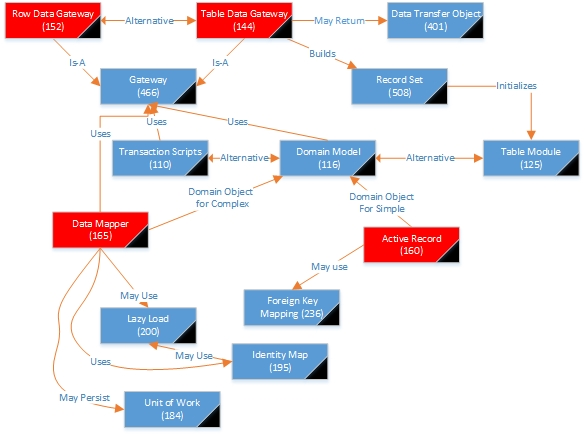

Architectural Patterns
The second narrative for
Mapping to Relational DBs
Want to separate SQL from the rest of the system
- Developers have trouble because they don’t understand it well, so specialists do most SQL coding
- SQL embedded in other languages can be awkward
- DBAs what to see the SQL to tune the DB
So,
we need a Gateway (466) between us and the table. That Gateway
holds the SQL and the rest of the system is DBMS agnostic
Where are we?

Background Patterns
- Gateway (466) - An object that encapsulates access to an external system or resource.
- Transaction
Scripts (110) - Organizes business logic by procedures where each
procedure handles a single request from the presentation.
- Domain Model (116) - An object model of the domain that incorporates both behavior and data.
- Table Module (120) - A single instance that handles the business logic for all rows in a database table or view.
- Data Transfer Object (401) - An object that carries data between processes in order to reduce the number of method calls.
- Record Set (508) - An in-memory representation of tabular data
- Lazy Load ( 200) - An object that doesn’t contain all of the data you need but knows how to get it
- Identity
Map (195) - Ensures that each object gets loaded only once by keeping
every loaded object in a map. Looks up objects using the map when
referring to them
- Unit of Work ( 184) - Maintains a list of
objects affected by a business transaction and coordinates the writing
out of changes and the resolution of concurrency problems.
Types of Gateways
- Row Data Gateway (152) which has one object for each row that is returned from the DB
- Table Data Gateway (144) which can return multiple rows in a Record Set (508) so there is one object per table.
Table Data Gateway (144)
An object that acts as a Gateway (466) to a database table. One instance handles all of the rows within the table.
- Has methods for queries, updates, inserts, etc.
- Each method specifies the individual affected by the call
- Usually stateless (so methods can be static)
- Basically encapsulates SQL actions
How do we return multiple items?
- Data Transfer Object (401)
- requires copying data out of the dataset
- defeats compile time checking (especially without generics)
- For Domain Model (116) return appropriate domain objects
- bi-directional coupling which isn’t beautiful
- Record Set (508)
When to use it
- Simplest DB interface pattern as it maps to the DB easily
- Can depend on the Domain Layer pattern
- Works well with Table Module (125)
- Can be used with Transaction Scripts (110)
- Choice between this and Row Data Gateway (152) depends on whether operations depend on multiple rows in table
- Sometimes make sense to make Data Mappers (165) use Table Data Gateway to access the DB
- Stored DB procedures are often organized as Table Data Gateways
Interesting Quotes
“Even a simple find-by-ID query will return multiple data items.”
“One
alternative is to return some simple data structure, such as a
map. A map works, but it forces data to be copied out of the
record set that comes from the database into the map. I think
that using maps to pass data around is bad form because it defeats
compile time checking and isn’t a very explicit interface leading to
bugs as people misspell what’s in the map. A better alternative
is to use a Data Transfer Object (401).”
Row Data Gateway (152)
An object that acts as a Gateway (466) to a single record in a data source. There is one instance per row.
- Responsible for type conversion between the stored and in memory representations
- Where to place the method to find an object? (think about find vs. create)
- a constructor with the find information as parameters
- a static method
- a separate finder class that returns the retrieved objects
- How do we create new rows?
- a constructor with all of the necessary information
- a static method
- Can be used with a view or a query as well as a table
- if
two of these update the same row in the same table, we have to worry
about one overwriting the changes made by another. So we’d like
to have only one per row. (Identity Map (195) may be helpful to
prevent duplication)
Interesting Quotes
“Also, if
you have two Row Data Gateway objects that operate on the same
underlying table, you may find that the second Row Data Gateway you
update undoes the changes on the first. There’s no general way to
prevent this; developers just have to be aware of how virtual Row Data
Gateways are formed.”
“ I don’t use a Row Data Gateway when I’m
using a Domain model (116). If the mapping is simple, Active Record
(160) does the same job without an additional layer of code. If
the mapping is complex, Data Mapper (165) works better, as it’s better
at decoupling the data structure from the domain objects because the
domain objects don’t need to know the layout of the database.”
“I’ve
see Row Data Gateway used very nicely with Data Mapper (165). Although
this seems like extra work, it can be effective iff the Row Data
gateways are automatically generated from meta data while the Data
Mappers (165) are done by hand”
Active Record (160)
An object that wraps a row in a database table or view, encapsulates the database access, and adds domain logic to that data
- An
Active Record is used when the classes in a Domain Model (116) match
the underlying database’s structure. Each Active Record is
responsible for saving and loading from the DB and has domain logic for
operations in that data
- fields should have 1-to-1 mapping to columns in the data
- with no conversion except for foreign keys which may use Foreign Key Mapping (236)
- if conversion is required by the rest of the system, put it in the getters and setters
- make sure that appropriate conversion is always done
- simplifies the persistence code
- Typically has methods to
- construct a new instance for later insertion into the DB
- static finder methods for common queries that return Active Record (160) objects
- update the DB
- get and set fields
- some business logic
When to use it
- When domain logic isn’t too complex
- When using Domain Model (116) have to choose between Active Record (160) and Data Mapper (166)
- Active Record (160) is easy to build and understand if objects are isomorphic to underlying DB schema
- If business logic is complex, it won’t map easily, so use Data Mapper (166)
- If
Transcription Scripts (110) are getting duplication of code or
complexity when updating the DB, then wrap tables in a Gateway (466)
and start moving behavior so tables evolve into Active Records.
Difference between Row Data Gateway (152) and Active Record (160):
if it contains business logic, it is an Active Record.
Interesting quotes
“The one-to-one match of domain classes to tables starts to fail as you factor domain logic into smaller classes”
“Another
argument against Active Record is the fact that is couples the object
design to the database design. This makes it more difficult to refactor
either design as the project moves forward.”
“Active Record is a
good pattern to consider if you’re using Transaction Scripts (110) and
are beginning to feel the pain of code duplication and the difficulty
in updating scripts and tables. . .
Data Mapper (165)
A
layer of Mappers (473) that moves data between objects and a database
while keeping them independent of each other and the mapper itself.
- DBs don’t deal with inheritance and contained collections easily, but those are good techniques in a Domain Model (116).
- This makes the objects in the Domain Model (116) not map easily to rows in the DB. (paradigm chasm)
- Data Mapper (165) must span that chasm
When to use it:
- Easiest case: object is stored as a row in a table.
- uses an Identity Map (195) to find/load the object.
- Can write the object with simple SQL
- Including the Data Mapper (165) allows the entire layer to be substituted to work in different DBs or for testing purposes
- Use when the data model includes
- Data Mapper (165) hides all of that complexity from the rest of the system
- When dealing with updates and inserts, must know what has changed, been created or destroyed.
- Unit of Work (184) can encapsulate that information
- A single request can result in a large number of related objects to be retrieved from multiple tables
- Lazy Load (200) can defer things we don’t need
- Otherwise, a join of multiple queries can be more efficient than individual queries
- Hand built mappers usually have one per domain class or one at the root of an inheritance hierarchy
- Using Meta Mapping (306) can allow us to have only one mapping class
- requires external specifications of the mappings
- may end up with so many finder methods that you what to separate them by domain class/hierarchy
- The Mappers are going to require Identity Maps (195) to maintain the identity of the objects it reads.
- have a Registry (480) of Identity Maps (195) or
- each finder holds its own Identity Map (195)
- Since the Data Mapper (165) has to be able to fill in the fields, you must have public methods to do that.
- If
you are worried about people using them indiscriminately, use a status
field to say that it is loading and only let them be changed if the
status is true.
- throw exception if accessed at wrong time
- name the method to warn people this will happen
- To create object either
- use a rich constructor that fills in the minimum required fields
- allows no setters for immutable fields
- will never have partial objects
- circular references can be tricky
- create empty object and fill in required fields separately
- When you want relational schema and object model to evolve independently
- Most common with Domain Model (116) allowing the model objects to ignore DB in design and test
- But
- adds a layer that Active Record (160) doesn’t require
- simple domain logic probably doesn’t require it
- Wouldn’t use it without Domain Model (116), but can use Domain Model (116) without Data Mapper (165)
Relationship to Domain Logic
- Table Module (125) makes it logical to use a Table Data Gateway (144)
- may be implemented as stored DB procedures
- Domain Model (116) has some choices:
- can use Row Data Gateway (152)
- can use Table Data Gateway (144)
- can make our Domain Model objects responsible for DB interactions
- can think of that as combining a Row Data Gateway (152) with domain logic
- Transaction Scripts (110)
- Extra indirection of Gateway (466) may not be necessary
- As domain logic gets more complex, Active Record (160) will start to break down.
- As
we refactor the Active Records into separate classes, the one-to-one
mapping of class to DB table breaks (especially if we need inheritance)
- We would also like to be able to test complex domain logic w/o reading the DB
- A Gateway (466) can allow us to substitute alternative functionality for testing (mocking the DB interactions the tests require)
- A better route might be to use a Data Mapper (165) to make the mapping from domain objects to tables.